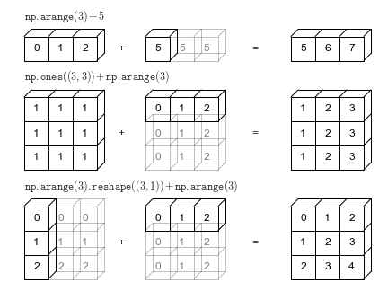
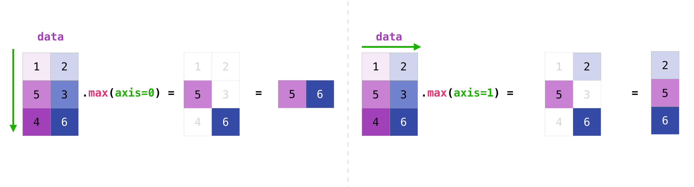

Uvod u NumPy
Ciljevi i ishodi učenja
Ciljevi učenja
Razumevanje uloge biblioteke NumPy u Pajton ekosistemu i njenog značaja u radu sa numeričkim podacima.
Savladavanje rada sa objektima tipa
ndarray, njihovim atributima i načinima formiranja.Usvajanje koncepta vektorizovanih operacija i eliminisanja eksplicitnih petlji radi povećanja efikasnosti.
Primena NumPy funkcija za generisanje slučajnih uzoraka, promenu dimenzionalnosti struktura podataka, broadcastovanje i osnovne statističke operacije.
Ishodi učenja
Nakon savladanog gradiva student će moći da:
kreira, manipuliše i transformiše NumPy nizove različite dimenzionalnosti;
primenjuje NumPy funkcije (
arange,linspace,reshape,sum,mean,max,argmax, itd.);koristi indeksiranje, slicing i logičke maske nad nizovima;
Generiše slučajne uzorke.
Uvod
NumPy je skraćenica za numerički Pajton (Numerical Python), osnovni paket za rad sa višedimenzionalnim nizovima (matricima) i vektorska izračunavanja. Ova biblioteka savršeno funkcioniše u kombinaciji sa ostalim popularnim bibliotekama kao što su SciPy, Matplotlib, pandas, and Scikit-learn što je čini i jednom od fundamentalnih biblioteka za napredna računanja u Pajtonu.
U tekstu o NumPy modulu na portalu Medium kojem možete pristupiti OVDE, konstatuje se da je NumPy inicijalno razvio Travis Oliphant 2005. godine kao zamenu za biblioteku Numeric. Naredne godine, NumPy integrisan je sa drugom bibliotekom, Numarray, i nastaje, danas nezaobilazna biblioteka u svakom uvodu u analitiku u Pajtonu. Na zvaničnoj NumPy stranici, u tekstu dostupnom OVDE konstatuje se da je bibiloteka razvijana od grupe postdiplomaca i na ovoj stranici dostupne su i dodatne informacije o Numeric i Numarray bibliotekama.
A šta nam to pruža NumPy:
Standardne matematičke funkcije za brze operacije nad nizovima podataka bez pisanja petlji
Alat za čitanje/upisivanje nizova podataka na disk i rad sa datotekama u memoriji
Linearna algebra: matrice, determinante, polinomi
Modul random za generisanje slučajnih brojeva iz različitih raspodela
Literatura i dodatni resursi
Kao i u svakom poglavlju, trudili smo se da pratimo nekoliko relevantnih resursa koje smo koristili prilikom pisanja ovog poglavlja. I vama ih preporučujemo ako želite dalje da istražujete mogućnosti ove biblioteke. Nekoliko najvažnijih mesta:
Zvanični sajt NumPy biblioteke. Bez dileme, najbolje mesto za svako pitanje koje vas bude interesovalo. OVDE možete naći uvod za početnike, mesto koje preporučujemo. Važno je razumeti da upotreba biblioteke kao što je Numpy, kasnije pandas, podrazumeva da ćete često konsultovati pomoć oko određenih mogućnosti koji svaka nudi. Naviknite se što pre da redovno izučavate ovakva mesta, naravno, pored Google pretraga koje su neizbežne.
Python Programming for Data Science, Tomas Beuzen
Peto poglavlje knjige Python Programming for Data Science koju je kreirao Tomas Beuzen predstavlja uvod u NumPy. Materijalma petog poglavlja možete pristupiti OVDE. Ova knjiga predstavlja jedan od omiljenih sadržaja jednog od autora.
Python Data Science Handbook, Jake VanderPlas
Drugo poglavlje ove sjajne knjige bavi se bibliotekom NumPy i poglavlju možete pristupiti OVDE.
Python for Data Analysis, Wes McKinney
Još jedna izuzetna knjiga koja predstavlja uzor u kreiranju ovog udžbenika. Četvrtom poglavlju koje se bavi NumPy bibliotekom možete pristupiti OVDE.
Ideja je da se ova lista redovno proširuje i dopunjava kvalitetnim materijalima koje će zainteresovanog čitaoca uputiti na dalje istraživanje. Svaka vaša pomoć ovim povodom izuzetno je dobrorošla. Želja nam je da knjigu redovno ažuriramo i dodajemo sadržaj koji će biti interesantan te vas molimo ako nađete zanimljive sadržaje bilo kog tipa da ih podelite i sa nama.
Instalacija i pokretanje
Ukoliko pokrećete Pajton koristeći Jupytera iz Anaconde, biblioteke kao što su NumPy ili pandas već su instalirane na vašem računaru. Ako bibliteka NumPy nije instalirana, možete je instalirati na sledeći način:
pip install numpy
Kako bismo koristili već instaliranu biblioteku neophodno je da je na početku uvezemo, i to radimo koristeći liniju koda navedenu ispod.
import numpy as np
Rasprostranjena konvencija je da se za NumPy koristi np i smatra se „pravopisom” da se tako referišete ako koristite ovu biblioteku. Ne zaboravite da ovu liniju koda morate pokrenuti svaki put kada iznova otvorite dokument kako bi se biblioteka učitala u radnu memoriju računara.
NumPy ndarray: višedimenzionalni niz
Osnova svega je ndarray. Ekonomičan, višedimenzionalni objekat homogenih podataka nad kojim je moguće izvesti veliki broj operacija i to vrlo brzo. NumPy nizovi imaju fiksnu veličinu pri kreiranju, za razliku od ugrađenih Pajton lista (koje mogu da rastu dinamički). Promena veličine ndarray objekta će kreirati novi niz i izbrisati original.
Objekti ndarray nam omogućavaju da izvedemo matematičke operacije nad celim blokovima podataka koristeći sličnu sintaksu kao onu koju bismo koristili za skalarna računanja. U daljem tekstu umesto nddaray objekta koristićemo i termin niz (array) kao sinonim.
Prednost operacija ove biblioteke je brzina. Sve operacije izvode se efikasnije (u smislu procesorskog vremena) ali i u pogledu dužine koda koji je potrebno napisati u poređenju sa kodom koji bi bio neophodan ako bismo koristili Pajtonove ugrađene nizove i komande. arrays.
Kreiranje ndarray objekata
array metod
Najjednostavniji način da kreirate ndarray objekat je funkcija array. Ona prihvata bilo koji nizu sličan objekat (uključujući i druge ndarray objekte) i proizvodi ndarray objekat koji sadrži prosleđene podatke. Lista ili torka dobri su kandidati za konverziju.
podaci_1 = (6, 7.2, 8, 0, 2) # Probajte isti ovaj kod i za liste da vidite da se ništa neće promeniti
print(podaci_1)
type(podaci_1)
(6, 7.2, 8, 0, 2)
tuple
Pre nego što prebacimo ovu torku (ili listu) u ndarray objekat, neophodno je da pozovemo NumPy biblioteku.
# %pip install --upgrade numpy # Ažurira verziju datoteke
import numpy as np
np.__version__
'2.3.3'
niz_1 = np.array(podaci_1)
print(niz_1)
type(niz_1)
[6. 7.2 8. 0. 2. ]
numpy.ndarray
Napomena
Objekat ndarray je generički višedimenzionalni kontejner sa homogenim podacima. Svi njegovi elementi moraju biti istog tipa.
Primetite da je kompajler sve podatke prilikom kreiranja ndarray niza zbog toga upisao kao float. Istražite šta bi se desilo da u ndarray pokušate da prebacite listu od jednog broja i jednog stringa.
Sve mogućnosti kretanja kroz nizove na koje ste se navikli za ugrađene liste važe i sada, od pristupanja delu liste, preko isecanja.
print(niz_1[1:4])
print(niz_1[2])
print(niz_1[:-2])
[7.2 8. 0. ]
8.0
[6. 7.2 8. ]
Ostali načini kreiranja ndarray objekata
Pored pozivanja np.array metode, postoji veliki broj drugih metoda za kreiranje novih nizova:
np.zerosinp.oneskreiraju nizove 0 i 1, tim redom, sa zadatom dužinom ili oblikom
np.zeros(5)
array([0., 0., 0., 0., 0.])
np.ones(3)
array([1., 1., 1.])
Kako bismo kreirali višedimenzionalni niz ovim metodama, potrebno je proslediti torku za oblik kao argument metoda koji se poziva
np.zeros(shape = (2,2))
array([[0., 0.],
[0., 0.]])
np.ones((3,5))
array([[1., 1., 1., 1., 1.],
[1., 1., 1., 1., 1.],
[1., 1., 1., 1., 1.]])
np.emptykreira niz bez inicijalizacije njegovih vrednosti na neku posebnu vrednost
np.empty((2,3,2))
# Može se desiti da se inicijalizacija ovakvog niza prikaže kao da su svi brojevi nula
# Nije bezbedno pretpostaviti da će np.empty biti niz sa svim nulama
array([[[0.00000000e+000, 0.00000000e+000],
[5.69163624e-321, 7.55920438e-322],
[6.50190390e-321, 1.31370875e-076]],
[[6.06712613e-321, 8.84698042e+165],
[3.69561103e-321, 1.27867829e+165],
[3.24107064e-321, 4.04096272e-037]]])
Jediničnu matricu kreiramo pomoću metode
np.eye
np.eye(3,3)
array([[1., 0., 0.],
[0., 1., 0.],
[0., 0., 1.]])
Matricu identičnih vrednosti kreiramo pomoću
np.full
np.full((2,2), 7)
array([[7, 7],
[7, 7]])
Inicijalizacija ndarray objekta pomoću niza
Kako bismo kreirali neki ndarray objekat koji sadrži niz brojeva imamo na raspolaganju dve metode: np.arange i np.linspace.
Metod
np.arangeje ekvivalent ugrađenoj funkcijirangesa dodatkom da može generisati niz sa realnim brojevima.
np.arange(5)
array([0, 1, 2, 3, 4])
np.arange(2,3.1,0.25)
array([2. , 2.25, 2.5 , 2.75, 3. ])
Metod arange ima jedan problem. Zbog ograničene preciznosti aritmetike sa realnim brojevima nije uvek moguće znati koliko će se elemenata kreirati. Iz tog razloga, i usled činjenice da nekada imamo potrebu da i poslednji element bude u kreiranom nizu brojeva, koristimo metod np.linspace. Ovaj metod kreira niz sa zadatim brojem elemenata, prvi i poslednji član su mu zadate vrednosti intervala, a članovi između su brojevi tako da je razlika između svaka dva broja jednaka.
Na primer, želimo da kreiramo aritmetički niz sa pet elemenata sa vrednostima između 1 i 20 uključujući i njih:
np.linspace(1,20,5)
array([ 1. , 5.75, 10.5 , 15.25, 20. ])
Dodatni materijal za istraživanje
Kako bismo inicijalizovali ndarray sa vrednostima koje se izračunavaju primenom funkcije, koristimo NumPy metod np.fromfunction. Metod uzima za svoje argumente funkciju u torku koja reprezentuje oblik željene matrice. Istražite samo kako ovaj metod funkcioniše.
Atributi objekta ndarray
Dimenzija ndarray niza (.ndim)
U programiranju, kada spomenemo niz, govorimo o strukuturi koja skladišti podatke. Skalar predstavlja niz dimenzije 0 (često možete videti i oznaku 0D niz) smatraćemo običan skalar. Jednodimenzioni niz predstavlja objekat niz_1 koji smo definisali. Dvodimenzionalni niz predstavljao bi matrični zapis brojeva, itd. Komanda .ndim omogućava da proverimo dimenzije NumPy objekata.
podaci_2 = [[1,2,3,5],[2,4,6,7]]
niz_2 = np.array(podaci_2)
niz_2
array([[1, 2, 3, 5],
[2, 4, 6, 7]])
print("Dimenzija za niz_1:", niz_1.ndim)
print("Dimenzija za niz_2:", niz_2.ndim)
Dimenzija za niz_1: 1
Dimenzija za niz_2: 2
Oblik niza (.shape)
Prateći logiku definisanja dimenzija matrice, oblik n-dimenzionog niza se prikazuje kao torka n nenegativnih prirodnih brojeva koji definišu broj elemenata u svakoj dimenziji tog niza. Da proverimo oblik nekog NumPy objekta koristimo .shape komandu.
Zvuči komplikovano, ali je u stvari veoma intuitivno i logično. Proverićemo prvo oblik za niz_2 i dobiti očekivani odgovor da je reč o matrici 2x4 dimenzija. Kada je reč o objektu niz_1, reč je o vektoru vrsta i njegove dimenzije bismo formalno zapisali 1x5. Za sada, bez obzira da li je reč o vektoru vrsta (dimenzija 1x5) ili transponovanom vektoru kolona (5x1) zapis pomoću ove komande biće identičan.
print("Oblika za niz_2:", niz_2.shape)
print("Oblika za niz_1:", niz_1.shape)
Oblika za niz_2: (2, 4)
Oblika za niz_1: (5,)
Kada je reč o jednodimenzionom nizu kakav je niz_1, njegov oblik može biti kako je prikazan gore, što bi impliciralo da ga vidimo kao jedan niz, iako, tehnički možemo kreirati sličan objekat i kao vektor kolona i kao vektor vrsta.
vektor_kolona = np.full((5,1),4)
print(vektor_kolona, vektor_kolona.shape)
[[4]
[4]
[4]
[4]
[4]] (5, 1)
vektor_vrsta = np.ones((1,5))
print(vektor_vrsta, vektor_vrsta.shape)
[[1. 1. 1. 1. 1.]] (1, 5)
Tip podataka (dtype)
Zanimljiva novina u odnosu na dosadašnje podatke je i tip podataka. Objekat data type opisuje koliko bajtova se koristi u rezervisanom bloku memorije koji odgovara nizu. Opisuje aspekte podataka kao što je tip podatka (integer, float, itd.) ili njegova veličina (koliko bajtova je rezervisano u memoriji). Ispod vidimo da objekat niz_2 ima elemente tipa int koji je zauzeo 32 bajta memorije.
Dodatni materijal za istraživanje
U tekstu se dotičemo samo osnovnih elemenata objekta. Za zainteresovane, istražite detaljnije data type objekte na zvaničnom sajtu biblioteke OVDE, ili alternativno na stranicama poput OVDE.
niz_2.dtype
dtype('int64')
Ostali atributi
Naravno, ovo je samo početak. Pored navedenih, postoji veliki broj atributa kojim možete ispitati vaš NumPy objekat. Navodimo ispod još neke a vama prepuštamo da istražite šta još postoji. Ispod smo pokrenuli ove atribute za niz_2.
size, ukupan broj podatakaitemsize, veličina u bajtovima svakog elementa objektanbytes, veličina u bajtovima celog objekta
print("size: ", niz_2.size)
print("itemsize: ", niz_2.itemsize)
print("nbytes: ", niz_2.nbytes) # Ovaj podatak smo videli i u informaciji int32 iznad.
size: 8
itemsize: 8
nbytes: 64
Broadcasting (emitovanje)
Broadcasting ili emitovanje predstavlja skup pravila za primenu binarnih univerzalnih operacija (kao što su sabiranje ili množenje) na nizovima različitih veličina.
a = np.arange(3)
b = np.arange(3)
print(a)
print(b)
a+b
[0 1 2]
[0 1 2]
array([0, 2, 4])
Emitovanje dozvoljava da se ovakvi tipovi binarnih operacija izvedu i na nizovima različitih veličina. Na primer, možemo jednostavno dodati skalar (kao niz dimenzije nula) nekom nizu:
print(a)
a + 5
[0 1 2]
array([5, 6, 7])
O ovome možemo razmišljati kao o operaciji koja vrednost 5 pretvara u niz [5, 5, 5] i onda određuje rezultat. Prednost emitovanja je u tome što se ovo pretvaranje vrednosti u niz zapravo ne dešava, ali je to koristan mentalni model dok razmišljamo o emitovanju. Na sličan način logiku možemo proširiti na nizove veće dimenzije.
Posmatramo primer gde se jednodimenzionalni niz a rasteže ili emituje preko druge dimenzije kako bi odgovarao obliku A.
A = np.ones((3,3))
print(A,a)
[[1. 1. 1.]
[1. 1. 1.]
[1. 1. 1.]] [0 1 2]
A + a
array([[1., 2., 3.],
[1., 2., 3.],
[1., 2., 3.]])
Iako su ovi primeri relativno laki za razumevanje, komplikovaniji slučajevi mogu uključivati emitovanje oba niza. Razmotrite sledeći primer:
a = np.arange(0,3)
b = np.arange(0,3).reshape(3,1)
print(a); print(b)
a+b
[0 1 2]
[[0]
[1]
[2]]
array([[0, 1, 2],
[1, 2, 3],
[2, 3, 4]])
Baš kao što smo pre istezali ili emitovali jednu vrednost da bi odgovarala obliku druge, ovde smo rastegli i a i b da bi odgovarali zajedničkom obliku, a rezultat je dvodimenzionalni niz! Geometrija ovih primera je vizuelizovana na sledećoj slici
{kind=link}

Slika 13. Emitovanje (Izvor: Python Data Science Handbook, Jake VanderPlas.)
Delu o emitovanju u toj knjizi možete pristupiti OVDE.
NumPy emitovanje sledi strogi skup pravila za određivanje interakcije između dva niza koja navodimo ispod.
Pravila emitovanja
Pravilo 1: Ako se dva niza razlikuju po broju dimenzija, oblik onog sa manje dimenzija se dopunjuje jedinicom na njegovoj vodećoj (levoj) strani.
Pravilo 2: Ako se oblik dva niza ne poklapa po nekoj dimenziji, niz sa oblikom jednakim 1 u toj dimenziji se rasteže tako da odgovara drugom obliku.
Pravilo 3: Ako se u bilo kojoj dimenziji veličine ne slažu i nijedna nije jednaka 1, javlja se greška.
Kreriaćemo dva niza različitih dimenzija i želimo da odgovorimo na pitanje, šta je rezultat linije koda M+a? Pokušajte da razmislite o odgovoru pre nego što pogledate izlaza bloka koda ispod.
M = np.arange(1,7).reshape(2, 3)
a = np.arange(1,4)
print("M = ", M) ; print("a =" , a)
print("Matrica M:", M.shape, "Matrica a:", a.shape)
M+a
M = [[1 2 3]
[4 5 6]]
a = [1 2 3]
Matrica M: (2, 3) Matrica a: (3,)
array([[2, 4, 6],
[5, 7, 9]])
Kako smo došli do ovog rezultata? Krenimo redom.
M.shape = (2, 3)
a.shape = (3,)
Pravilo 1: Ako se dva niza razlikuju po broju dimenzija, oblik onog sa manje dimenzija se dopunjuje jedinicom na njegovoj vodećoj (levoj) strani.
Koristeći Pravilo 1, vidimo da niz a ima manje dimenzija, pa na levoj strani stavljamo jedinicu za nedostajuću dimenziju:
M.shape -> (2, 3)
a.shape -> (1, 3)
Pravilo 2: Ako se oblik dva niza ne poklapa po nekoj dimenziji, niz sa oblikom jednakim 1 u toj dimenziji se rasteže tako da odgovara drugom obliku.
Po pravilu 2, sada vidimo da se prva dimenzija ne slaže, pa proširujemo ovu dimenziju tako da se podudara:
M.shape -> (2, 3)
a.shape -> (2, 3)
Oblici se poklapaju i vidimo da će konačni oblik biti (2, 3).
Niz a rastegao se do dimenzije \(2 \times 3\) i on izgleda ovako:
[[1 2 3],
[1 2 3]]
Sabiranje se sada realizuje na očekivan način i dobijamo rezultat koji je i prikazan iznad.
Probajmo da predvidimo šta će biti izlaz ako posle pokretanja sledećeg bloka želimo da izračunamo a+b?
a = np.arange(1,4).reshape((3,1))
b = np.arange(3)
print(a, "\n"); print(b, "\n")
print("Matrica a:", a.shape)
print("Matrica b:", b.shape)
[[1]
[2]
[3]]
[0 1 2]
Matrica a: (3, 1)
Matrica b: (3,)
Opet, počećemo ispisivanjem oblika nizova:
a.shape = (3, 1)
b.shape = (3,)
Pravilo 1 kaže da moramo dopuniti oblik b jedinicom na vodećoj strani:
a.shape -> (3, 1)
b.shape -> (1, 3)
Pravilo 2 nam govori da svaki od ovih nadogradimo tako da odgovara odgovarajućoj veličini drugog niza:
a.shape -> (3, 3)
b.shape -> (3, 3)
Pošto se rezultat poklapa, ovi oblici su kompatibilni u skladu sa Pravilom 3 i nakon rastezanja, dobijamo rešenje
array([[1, 2, 3],
[2, 3, 4],
[3, 4, 5]]))
Hajde sada da pokušamo da damo odgovor na pitanje bez pokretanja koda: Šta će biti izlaz prilikom pokretanja sledećeg bloka koda?
a = np.ones((3,2))
b = np.arange(1,4)
a+b
Formirajmo prvo nizove koji su definisani u zadatku:
a = np.ones((3,2))
b = np.arange(1,4)
print(a, "\n"); print(b, "\n")
print("oblik (shape) a:", a.shape)
print("oblik (shape) b:", b.shape)
[[1. 1.]
[1. 1.]
[1. 1.]]
[1 2 3]
oblik (shape) a: (3, 2)
oblik (shape) b: (3,)
Oblici nizova su:
M.shape = (3, 2)
a.shape = (3,)
Opet, pravilo 1 nam govori da oblik a moramo popuniti jedinicama:
M.shape -> (3, 2)
a.shape -> (1, 3)
Po pravilu 2, prva dimenzija a se rasteže tako da odgovara onoj od M:
M.shape -> (3, 2)
a.shape -> (3, 3)
Aktivira se pravilo 3 – konačni oblici se ne poklapaju, tako da su ova dva niza nekompatibilna i rezultat je greška u kompajliranju.
Kada smo ovo kviz pitanje postavljali tokom nastave, često smo dobijali netačan odgovor, gde je najbolji distraktor bio odgovor c). Studenti su imali smatrali da ova dva niza mogu biti kompatibilna ako bi niz b dopunili brojem jedan sa desne strane (i suštinski kreirali vektor vrsta dimenzija \(3 \times 1\)).
Pravila emitovanja ne funkcionišu na taj način. Iako bi takva fleksibilnost bila korisna u pojedinim situacijama, dovela bi do nejasnoća prilikom upotrebe nizova. Ako želite da niz dopunite sa desne strane i dobijete vektor vrsta, neophodno je preoblikovati niz pomoću np.reshape:
a + b.reshape(3,1)
array([[2., 2.],
[3., 3.],
[4., 4.]])
Ovo nije jedini način da uradite željenu transformaciju, što će biti čest slučaj i kod ostalih biblioteka. Svaka nudi veći broj korisnih modula i postoji puno načina da se dođe do ispravnog rešenja. Jedna od opcija je np.newaxis metod.
b = np.arange(1,4)
b_vektor = b[:,np.newaxis]
b_vektor.shape
(3, 1)
Dodatni materijal za istraživanje
Ni to nije sve, moguće je upotrebiti metodu np.expand_dims. Istražite kako biste isti zadatak uradili pomoću ove metode.
Šta bi se desilo da ste pokušali da pokrenete sabiranje transponovanom vrednošću niza b? Da li će blok koda ispod biti još jedno moguće rešenje? Razmislite o odgovoru, pa testirajte ovo rešenje.
1a = np.ones((3,2))
2b = np.arange(1,4)
3a+b.T
Kalkulacije sa NumPy nizovima
Numpy je važan modul jer nam omogućava rutinske operacije sa podacima bez pisanja velikog broja for petlji. Sve ono što ćete videti u nastavku možemo da uradimo i u osnovnom Pajtonu, ali bi nam za to bilo neophodno daleko više linija koda. Pre toga, jedno kviz pitanje da testirate sebe da li ste razumeli kako neki od osnovnih metoda NumPy biblioteke funkcionišu.
Kviz
Šta će biti izlaz prilikom pokretanja sledećeg bloka koda?
1arr = np.arange(1,7).reshape(2,3)
2arr
Odgovor:
array([[1, 2, 3],
[4, 5, 6]])
Neka je:
arr = np.array([[3,2,1],[6,5,4]])
print(arr)
[[3 2 1]
[6 5 4]]
Moguće je sprovesti operacije kao što su ove ispod:
arr + arr
array([[ 6, 4, 2],
[12, 10, 8]])
arr * arr # Nije množenje matrica, već množenje element sa odgovarajućim elementom
array([[ 9, 4, 1],
[36, 25, 16]])
Napomena
Da se podsetimo, svaka aritmetička operacija među vektorima jednake veličine primenjuje operaciju na elementima iste pozicije. Prethodna linija koda ne predstavlja množenje matrica.
Ispod navodimo kako bismo množili dve matrice. Da dođemo do odgovarajuće forme matrica za množenje, koristimo transponovanu matricu arr.
np.dot(arr.T,arr) # Množenje matrica
array([[45, 36, 27],
[36, 29, 22],
[27, 22, 17]])
Univerzalne funkcije
Univerzalna funkcija, ili ufunc, je funkcija koja sprovodi operacije nad podacima u nizovima. Možete ih zamisliti kao brze vektorizovane promene jednostavnim funkcijama koje uzimaju jednu ili više skalarnih vrednosti kako bi proizvele jedan ili više rezultata. Veliki broj ufunc su jednostavne transformacije, kao sqrt ili exp.
Dodatni materijal za istraživanje
Univerzalne funkcije jedan je od glavnih razloga zbog čega se operacije pomoću NumPy biblioteke izvrašavaju jako brzo. Da to bolje razumete, preporučujemo jedan od gorespomenutih resursa gde autori pomoću magične komande %timeit mere neophodno vreme za izvršenje određene for-petlje, a kasnije i uporedivog koda napisanog uz pomoć NumPy komandi. Tekstu možete pristupiti OVDE.
Takođe, spisak svih univerzalnih funkcija kao i detalji vezani za njihovu primenu mogu se pronaći na zvaničnoj stranici NumPy biblioteke, a direktan link ka toj stranici se nalazi OVDE.
Primeri univerzalnih funkcija:
(1/arr).round(2)
array([[0.33, 0.5 , 1. ],
[0.17, 0.2 , 0.25]])
np.arctan(arr).round(2)
array([[1.25, 1.11, 0.79],
[1.41, 1.37, 1.33]])
np.mod(arr,2)
array([[1, 0, 1],
[0, 1, 0]])
np.log(arr).round(2)
array([[1.1 , 0.69, 0. ],
[1.79, 1.61, 1.39]])
np.sqrt(arr).round(2)
array([[1.73, 1.41, 1. ],
[2.45, 2.24, 2. ]])
Za sve funkcije iz primera koji prethode unarne ufunkcije, jer se primenjuju na jedan niz. Druge, kao što su add ili maximum, uzimaju dva niza (binarne ufunkcije) i vraćaju jedan niz kao rezultat:
x = np.random.randint(1,110,6)
y = np.random.randint(11,21,6)
print(x); print(y)
[ 6 74 87 25 40 6]
[16 14 18 18 11 15]
np.add(x,y)
array([ 22, 88, 105, 43, 51, 21], dtype=int32)
np.maximum(x,y)
array([16, 74, 87, 25, 40, 15], dtype=int32)
Kao što vidite, univerzalne funkcije su u metode koje izvršavaju operacije koje i ugrađeni Pajton ima, samo se to realizuje značajno brže. Preuzećemo primer iz knjige navedene gore i pokazati efikasnost ugrađene funkcije sum i metode np.sum.
veliki_niz = np.random.rand(100000)
%timeit sum(veliki_niz)
%timeit np.sum(veliki_niz)
8.05 ms ± 605 μs per loop (mean ± std. dev. of 7 runs, 100 loops each)
42 μs ± 805 ns per loop (mean ± std. dev. of 7 runs, 10,000 loops each)
NumPy ose
Prilikom indeksiranja u NumPy nizovima, redovi se referišu kao osa 0 (axis = 0), dok su kolone osa 1 (axis = 1). Taj način indeksacije potpuno je intiuivan i odgovara logici koju smo i do sada imali u Pajtonu. Da bolje razumemo kako funkcionišu ose, preuzećemo jedan primer sa zvanične NumPy stranice gde uz pomoć metoda np.max, np.sum možemo lepo razumeti logiku upotreba osa.
Polazimo od matrice \(3 \times 2\) i upotrebićemo dve spomenute agregatne funkcije na celu matricu:
Matrica = np.arange(1,7).reshape(3,2)
print(Matrica)
print(Matrica.sum())
print(Matrica.max())
[[1 2]
[3 4]
[5 6]]
21
6
Ipak, ovo nije ono što je nama bilo neophodno. Želeli smo da nađemo maksimum i/ili sumu vrednosti unutar svake kolone. Kako to možemo da uradimo? Prilikom poziva metoda, postavićemo parametar axis = 0.
print(Matrica.sum(axis=0))
print(Matrica.max(axis=0))
[ 9 12]
[5 6]
Na ovaj način, sugerisali smo NumPy metodi da prođe kroz redove isključivo dok sprovodi računanje i time obezbedili vrednost željene metode za svaku kolonu. To je lepo prikazano i na slici ispod.
{kind=link}

Slika 14. NumPy_ose (Izvor: Zvanična veb-stranica NumPy biblioteke)
Stranici o indeksiranju i isecanju možete pristupiti OVDE.
Podsetimo se našeg trodimenzionalnog niza koji smo nedavno kreirali
niz3d = np.arange(1,19).reshape(3,2,3)
print(niz3d)
[[[ 1 2 3]
[ 4 5 6]]
[[ 7 8 9]
[10 11 12]]
[[13 14 15]
[16 17 18]]]
Možemo sada sumirati ove tri matrice. Dovoljno je da naglasimo da želimo da koristimo osu 0, što u ovom slučaju znači da ćemo računati sumu tri elementa matrice i kao rezultat dobiti matricu koja predstavlja zbir.
niz3d.sum(axis=0)
array([[21, 24, 27],
[30, 33, 36]])
Kviz:
Ako želimo da koristimo više od jedne ose unutar n-dimenzionog vektora, prilikom poziva neke funkcije, neophodno je ose predstaviti kao torku brojeva, kako smo i prikazali u kodu ispod. Šta će biti rezultat prilikom pokretanja sledećeg bloka koda?
niz3d = np.arange(1,25).reshape(2,3,4)
niz3d.max(axis=(1,2))
Odgovor:
([12, 24])
Indeksiranje i isecanje
Osnove indeksiranja
Indeksiranje NumPy nizova je raznovrsno jer postoji veliki broj načina da selektujete podskup podataka ili izdvojite individualne elemente. Primetićemo da isecanje i sve ono što je važilo za strukture podataka poput listi važi i dalje, a u nastavku ćemo se upoznati sa načinima prolaska kroz podatke i selektovanja odgovarajućih podataka koje nismo imali do sada.
Jednodimenzioni nizovi
Situacija kod jednodimenzionalni nizova je jednostavna, oni funkcionišu kao liste.
niz1d = np.arange(5)
niz1d # Ako vam se ne sviđa ova vrsta izlaza, koristite print funkciju
array([0, 1, 2, 3, 4])
Isecanje funkcioniše identično kao i kod listi, sa argumentima u formi start:stop:step.
print(niz1d[3])
print(niz1d[2:4])
print(niz1d[0:-1:2])
3
[2 3]
[0 2]
Napomena
Dodeljivanje vrednosti koristi principe emitovanja o kojoj ćemo više govoriti kasnije. Ako dodelite numeričku vrednost isečenom, vrednost se produžava (emituje) na celu selekciju.
print(niz1d)
niz1d[2:4] = 12 #12 -> [12, 12, 12], više o tome u narednom odeljku
niz1d
[0 1 2 3 4]
array([ 0, 1, 12, 12, 4])
Kroz narednih nekoliko kviz pitanja podsetićemo se na već naučene osobine listi, a zatim ćemo napraviti paralelu sa NumPy nizovima.
Kviz
Šta će biti izlaz prilikom pokretanja sledećeg bloka koda?
lista1 = [0,1,2,3,4]
deo = lista1
deo[1] = 15
lista1
Odgovor:
[0, 15, 2, 3, 4]
Kviz
Šta će biti izlaz prilikom pokretanja sledećeg bloka koda?
lista1 = [0,1,2,3,4]
deo = lista1[2:5]
deo[1] = 15
lista1
Odgovor:
[0, 1, 2, 3, 4]
Kviz pitanje
Šta će biti izlaz prilikom pokretanja sledećeg bloka koda?
arr = np.arange(5)
deo_arr = arr[2:5]
deo_arr[1] = 15
arr
Odgovor:
[0, 1, 2, 15, 4]
Napomena
Važna razlika NumPy nizova u odnosu na liste je da su isecanja niza uvid u originalni niz. To znači da se podaci ne kopiraju, te će svaka promena u „uvidu” uticati na originalni niz.
Osnovna logika je jasna: NumPy nizovi dizajnirani su za primenu na velikom skupu podataka i ušteda memorijskog prostora je značajna.
arr = np.arange(5)
deo_arr = arr[2:5]
deo_arr[:]=64
arr
array([ 0, 1, 64, 64, 64])
Napomena
Logično pitanje se otvara: Ako NumPy radi ovako, kako da uzmem deo nekog niza i menjam ga, a da ne pokvarim originalni skup podataka?
Odgovor: koristimo NumPy metode np.copy i np.view.
Metoda np.copy kreira duboku kopiju niza (podsetite se priče o plitkim i dubokim kopijama kod listi) i upravo je metoda koju smo želeli. Metodom np.view sugerišemo da želimo da ostvarimo uvid u originalni niz i svaka promena tako kreiranog objekta, uticaće i na originalni niz.
U primeru ispod, kreiraćemo (duboku) kopiju elemenata niza, i vidimo da menjanje deo_arr neće uticati na originalni niz.
arr = np.arange(5)
deo_arr = np.copy(arr[2:5])
deo_arr[1] = 15
arr
array([0, 1, 2, 3, 4])
Sa druge strane, metoda np.view nam ne donosi ništa novo u odnosu na kodove iz kviza ali je sada kod čitljiviji i jasno smo naznačili da želimo da ostvarimo uvid u deo niza koji hoćemo i da promenimo.
arr = np.arange(5)
deo_arr = arr[2:5].view()
deo_arr[1] = 15
arr
array([ 0, 1, 2, 15, 4])
Dodatni materijal za istraživanje
Zbog ovakvih mogućnosti unutar NumPy biblioteke, zgodno je da u svom kodu uvek naznačite da li želite uvid u neki podniz ili vam treba kopija. Ovakav način rada ostavlja čitljiv kod kojem i ostalim članovima tima sugerišete jasno vaše namene.
Naravno, metoda np.view ne služi samo za lepši i jasniji kod. Istražite parametre metode i njenu ulogu i upotrebu u NumPy nizovima.
Višedimenzioni nizovi
Očekivano, kod višedimenzionalnih nizova, postoji mnogo više metoda (opcija) za pristup delu niza. Krenućemo dvodimenzionalnih nizova, odnosno, jedne \(3 \times 3\) matrice koju ćemo da formiramo.
niz2d = np.arange(1,10).reshape(3,3)
print(niz2d)
[[1 2 3]
[4 5 6]
[7 8 9]]
Isecanjem samo po jednom indeksu kao u kod ispod dobijamo odgovarajući red dvodimenzionalnog niza (odnosno, matrice):
niz2d[2]
array([7, 8, 9])
Individualnim elementima možemo pristupiti na nekoliko načina. Sledeća dva pristupa su ekvivalentna:
niz2d[0][2]
np.int64(3)
niz2d[0,2]
np.int64(3)
Pristupili smo redovima matrice, svakom pojedinačnom elementu, ali je nama za potrebe rešavanja problema potrebno da izvršimo operaciju nad nekom kolonom. Jasno, možemo pristupiti i kolonama i to na način naveden ispod. U primeru ispod, rešili smo da izvdvojimo prve dve kolone matrice.
niz2d[:,:2]
array([[1, 2],
[4, 5],
[7, 8]])
Naravno, NumPy nam omogućava da kreiramo i nizove većih dimenzija. Kod trodimenzionih nizova, prva osa predstavlja broj matrica
niz3d = np.arange(1,25).reshape(2,3,4)
niz3d
array([[[ 1, 2, 3, 4],
[ 5, 6, 7, 8],
[ 9, 10, 11, 12]],
[[13, 14, 15, 16],
[17, 18, 19, 20],
[21, 22, 23, 24]]])
Kod višedimenzionalnih nizova, ako se izostave poslednji indeksi, vraćeni objekat biće ndarray objekat manjih dimenzija koji sadrži sve podatke unutar viših dimenzija.
Drugim rečima, ako pozovemo niz3d[0] kako je i prikazano ispod, aktiviramo prvu dimenziju našeg niza, dok druge se prenose kompletno. Ovaj kod daće nam isti rezultat kao da smo zapisali niz3d[0,:,:]
niz3d[0] # je prva matrica u nizu matrica 3x4
# Testirajte, niz3d[0,:,:] daje isti rezultat
array([[ 1, 2, 3, 4],
[ 5, 6, 7, 8],
[ 9, 10, 11, 12]])
Kviz pitanje
Šta će biti rezultat prilikom pokretanja sledeće linije koda?
niz3d[:,1:,:]
Podsetimo se, niz3d je sledećeg oblika:
array([[[ 1, 2, 3, 4],
[ 5, 6, 7, 8],
[ 9, 10, 11, 12]],
[[13, 14, 15, 16],
[17, 18, 19, 20],
[21, 22, 23, 24]]])
Odgovor:
array([[[ 5, 6, 7, 8],
[ 9, 10, 11, 12]],
[[17, 18, 19, 20],
[21, 22, 23, 24]]])
Celobrojno indeksiranje
Ukratko ćemo proći kroz indeksiranje koje su na zvaničnoj stranici referiše kao celobrojno indeksiranje (možete videti OVDE), ali se može naći i termin fensi indeksiranje poput ove knjige OVDE. Odeljak i bazirali smo na primerima sa ove dve stranice.
Pretpostavimo da želimo da preuzmemo određene elemente nekog niza. To je moguće uraditi na sledeći način:
x = np.arange(10, 0, -1)
print(x)
x[np.array([3, 3, -1, 8])]
[10 9 8 7 6 5 4 3 2 1]
array([7, 7, 1, 2])
Dobili smo vrednosti elemenata na pozicijama 3 (dvaput zaredom), vrednost elementa na poslednjoj poziciji i vrednost elementa sa indeskom 8.1 Iako je ovo kod direktno preuzet sa NumPy sajta, mi u stvari nismo ni morali da pravimo ndarray prilikom poziva, već je dovoljno bilo da se pozovemo na listu elemenata:
x[[3,3,-1,8]]
array([7, 7, 1, 2])
Dozvoljen je i ovakav način pozivanja koji će dovesti do istog rezultata:
[x[3], x[3], x[-1], x[8]]
[np.int64(7), np.int64(7), np.int64(1), np.int64(2)]
Kod višedimenzionalnih nizova, situacija funkcioniše slično. Koristićemo naš niz2d koji smo već kreirali. Sledećom linijom koda tražimo dva reda, red sa indeksom 1 i poslednji red. Uradićemo to na dva načina, kreirajući ndarray objekat ili samo davati listu indeksa kao argumente.
print(niz2d)
niz2d[np.array([1, -1])]
[[1 2 3]
[4 5 6]
[7 8 9]]
array([[4, 5, 6],
[7, 8, 9]])
niz2d[[1,-1]]
array([[4, 5, 6],
[7, 8, 9]])
Pogledajte kod ispod i pokušajte sami da razumete šta će biti izlaz te linije koda.
niz2d[[1, 1, 2], [0, -1, 1]]
array([4, 6, 8])
Ono što smo dobili su u stvari vrednosti elemenata na pozicijama (1,0), (1,-1) i (2,1).
Emitovanje je aktivno i prilikom celobrojnog isecanja, tako da sledeći kod neće dovesti do greške već ćemo dobiti vrednosti na pozicijama (1,1), (1,1) i (2,1).
niz2d[[1, 1, 2], 1]
array([5, 5, 8])
Pretpostavimo da imamo niz ispod, i neophodno je da kreiramo matricu sa redovima 1, 5 pa 2 i kolonama 0, 3 i 1. Sada znamo, da komanda ispod neće dati željeni rezultat.
niz = np.arange(32).reshape((8,4))
niz[[1, 5, 2], [0, 3, 1]]
array([ 4, 23, 9])
Pokušajte sami da dođete do odgovora. Mi ćemo ponuditi dva rešenja. Prvo je sledeće:
niz[[1, 5, 2]][:, [0, 3, 1]]
array([[ 4, 7, 5],
[20, 23, 21],
[ 8, 11, 9]])
Drugi način je primena np.ix_ funkcije, koja konvertuje jednodimenzioni celobrojni niz u indeksar kojim selektujemo kvadratnu matricu. Drugim rečima, ova funkcija uzima \(n\) jednodimenzionalnih nizova i kreira objekat praveći kombinacije njihovih indeksa.
Na primer a[np.ix_([1,3],[2,5])] vraća niz [[a[1,2] a[1,5]], [a[3,2] a[3,5]]]. Više o funkciji možete videti OVDE.
niz[np.ix_([1, 5, 2], [0, 3, 1])]
array([[ 4, 7, 5],
[20, 23, 21],
[ 8, 11, 9]])
Indeksiranje uz pomoć operatora poređenja i Bulove algebre
Pre nego što nastavimo, prvo pitanje koje ste nadamo se postavili je vezano za termin Bulova algebra. O čemu se tu radi? Pod Bulovom algebrom posmatramo logičku algebarsku strukturu u kojoj rezultat računanja može biti samo tačno ili netačno. U odnosu na standardne aritmetičke operacije, unutar Bulove algebre koristimo tri osnovna operatora I, ILI i NE (kao negacija). Bulova algebra dobila je naziv po Džordžu Bulu, engleskom matematičaru i filozofu. Više o njegovom životu možete pročitati OVDE, a nešto više detalja o Bulovoj algebri možete naći OVDE. Ne čita vam se detaljno ništa od navedenog? Potrudili smo se da nađemo kraći video koji opisuje značaj Bulove alegbre (video možete pogledati OVDE.
Ime Džordž Bul vam zvuči poznato? I zaista jeste tako. Cela jedna klasa promenljivih nosi ime po njemu:
ind = True
type(ind)
>>> bool
Logičke promenljive (engl. boolean) nose naziv u čast ovog matematičara.
Kada nam Bulova algebra može biti korisna prilikom pretrage niza? Na primer, želimo da prebrojimo sve vrednosti koje su veće od neke konkretne vrednosti ili možda da obrišemo sve ekstremne vrednosti (engl. outliers) niza. U NumPy biblioteci, ovaj način indeksiranja obično je najefikasniji za rešavanje ovakvih zadataka.
Kada smo ranije govorili o univerzalnim funkcijama posebno smo se fokusirali na aritmetičke operatore. Videli smo da korišćenje +, -, *, / i drugih operatora na nizovima dovodi do operacija po elementima. NumPy takođe implementira operatore poređenja kao što su < (manje od) i > (veće od) kao operatore po elementima. Rezultat ovih operatora poređenja je uvek niz sa Bulovim tipom podataka. Dostupno je svih šest standardnih operacija poređenja:
x = np.arange(20).reshape(4,5)
x
array([[ 0, 1, 2, 3, 4],
[ 5, 6, 7, 8, 9],
[10, 11, 12, 13, 14],
[15, 16, 17, 18, 19]])
Rezultat naredne linije koda biće takođe ndarray objekat koji će uzimati vrednost True ako je logički izraz tačan, i vrednost False ako to nije slučaj. Zašto je ovo rezultat? Pa reč je ponovo o emitovanju koje je stupilo na scenu.
x < 6
array([[ True, True, True, True, True],
[ True, False, False, False, False],
[False, False, False, False, False],
[False, False, False, False, False]])
Testirajte istu liniju koda i za druge operatore poređenja: >,<=,>=,==,!=.
Ovakav ndarray objekat se sada može koristiti za potrebe isecanja. Ovakav postupak nazivamo maskiranjem, gde masku predstavlja objekat x<6.
x[x<6]
array([0, 1, 2, 3, 4, 5])
Dobili smo niz elemenata koji odgovoraju postavljenom zahtevu, odnosno, niz elemenata koji unutar objekta x<6 imaju vrednost True. Ako vam je za sada nejasno da je i x<6 objekat, posmatrajte to u duhu koda ispod koji je ekvivalentan onome što je napisano gore:
1uslov = x < 6
2x[uslov]
Najpre smo napraviti logički (Bulov) niz svih vrednosti koje zadovoljavaju uslov (x < 6). Nakon toga, da bismo izabrali ove vrednosti iz niza, možemo ga jednostavno indeksirati ovim Bulovim nizom kao što smo i uradili. Ovo je poznato kao operacija maskiranja.
Kviz
Ovo pitanje preuzeli smo sa zvanične NumPy stranice, iz dela o indeksiranju dostupnom OVDE. Pitanje je složenije od dosadašnjih, dobro razmislite pre nego što date odgovor, pokušajte da odgovor kreirate deo po deo. Šta će biti izlaz prilikom pokretanja sledećeg bloka koda?
1x = np.arange(35).reshape(5, 7)
2b = x > 20
3x[b[:, 5], 1:3]
Odgovor:
Ovo pitanje zaslužuje detaljnije obrazloženje. Prvo da razmislimo šta će dati ispis linije koda b[:, 5]. Reč je o šestoj koloni (indeks 5) logičke matrice uslova x>20. Rezultat je sledeći niz:
array([False, False, False, True, True])
Ova vrednost koristi se kod redova u isecanju x[b[:, 5], 1:3]. Vrednost True imamo za poslednja dva elementa, tako da ovim isecanjem selektujemo poslednja dva reda matrice x, kao i kolone sa indeksima 1 i 2. Ukupno, izlaz ovog bloka koda i tačan odgovor na postavljeno pitanje je:
array([[22, 23],
[29, 30]])
Upotreba ovakvih logičkih elemenata dobija još više na značaju ako je spojimo sa nekoliko korisnih metoda.
matrica = np.arange(-7,13).reshape(4,5)
matrica
array([[-7, -6, -5, -4, -3],
[-2, -1, 0, 1, 2],
[ 3, 4, 5, 6, 7],
[ 8, 9, 10, 11, 12]])
Bez da detaljišemo previše, čini se da je jasno da će nam kod ispod dati niz vrednosti koje su različite od 0.
matrica[matrica.nonzero()]
array([-7, -6, -5, -4, -3, -2, -1, 1, 2, 3, 4, 5, 6, 7, 8, 9, 10,
11, 12])
Do kraja odeljka, izdvojićemo još dve interesantne metode. Ako smo zainteresovani da brzo proverimo da li su neke ili sve vrednosti True u nekoj logičkoj matrici koju smo kreirali, možemo da koristimo np.any ili np.all.
np.any(matrica > 5)
np.True_
np.all(matrica > -5)
np.False_
Naravno, ose su aktivne kod svih ovakvih metoda, i na taj način možemo proveriti šta god da nas interesuje i po vrstama i po kolonama
np.all(matrica<2, axis=1) # Pogledajte šta smo dobili ovom linijom koda
array([ True, False, False, False])
Dobili smo sledeći zadatak. Neophodno je da izbrojimo nenegativne elemente matrice.
To možemo uraditi na sledeći način:
np.count_nonzero(matrica<0)
np.int64(7)
Kviz
Šta će biti izlaz prilikom pokretanja sledećeg bloka koda?
matrica = np.arange(-7,13).reshape(4,5)
np.sum(matrica < 0)
Odgovor:
-28
Da pojasnimo kako smo došli do takvog odgovora. Kod ispod možda može najviše pomogne. Uslov matrica < 0 kreirao je masku sa vrednostima True i False i sumiranje takve matrice i dovelo je do toga da smo dobili opet identičan odgovor kao i iznad, broj elemenata koji su manji od 0.
matrica < 0
array([[ True, True, True, True, True],
[ True, True, False, False, False],
[False, False, False, False, False],
[False, False, False, False, False]])
Pretpostavimo da nama sve vreme treba suma negativnih elemenata. Kako ćemo to ostvariti?
Najpre ćemo napraviti logički (Bulov) niz svih vrednosti koje zadovoljavaju uslov (matrica < 0). Nakon toga, da bismo izabrali ove vrednosti iz niza, možemo ga jednostavno indeksirati ovim Bulovim nizom.
matrica[matrica < 0]
array([-7, -6, -5, -4, -3, -2, -1])
Sumu kao metodu pozvaćemo na samom kraju, nakon što smo kreirali željeni niz.
matrica[matrica < 0].sum()
np.int64(-28)
Kviz
Šta će biti izlaz prilikom pokretanja sledećeg bloka koda?
1matrica = np.arange(-7,13).reshape(4,5)
2np.sum(matrica < 0, axis=1)
Odgovor:
array([5, 2, 0, 0])
Kviz pitanje
Šta će biti izlaz prilikom pokretanja sledećeg bloka koda?
1M = np.arange(12).reshape(4,3)
2a = (M.sum(-1) % 2) == 0
3b = [0, 2]
4x[np.ix_(a, b)]
Odgovor:
array([[ 3, 5],
[ 9, 11]])
Kako otkriti koji su sve unosi, na primer, manji od 4 ili veći od 1? Da bismo odgovorili na ovakav zahtev, neophodno je da iskoristimo Pajtonove logičke operatore &, |, ^ i ~. Kao i kod standardnih aritmetičkih operatora, NumPy ih tretira kao univerzalne funkcije koji rade po elementima na (obično logičkim, tj. Bulovim) nizovima.
Posmatrajmo sledeći blok koda. Kod će nam dati broj elemenata objekta matrica_2 koji su veći od 1 i manji od 4.
matrica_2 = np.arange(12).reshape(4,3)
np.sum((matrica_2 > 1) & (matrica_2 < 4))
np.int64(2)
Uslovni logički izrazi kao operacije sa nizovima
Funkcija numpy.where je vektorska verzija ternarnog izraza x if uslov else y. Pogledajmo primer iz knjige Vesa Mekinija. Pretpostavimo da imamo bulov niz i dva niza vrednosti:
xarr = np.array([2.1, 2.2, 2.3, 2.4, 2.5])
yarr = np.array([3.1, 3.2, 3.3, 3.4, 3.5])
cond = np.array([True, False, True, True, False])
Pretpostavimo da želimo da uzmemo vrednost iz xarr kada je odgovarajuća vrednost u cond True u suprotnom uzimamo vrednost iz yarr. Objašnjavajuća lista bi to uradila na sledeći način:
result = [ (x if c else y) for x, y, c in zip(xarr, yarr, cond)]
result
[np.float64(2.1),
np.float64(3.2),
np.float64(2.3),
np.float64(2.4),
np.float64(3.5)]
Nekoliko problema:
Kod se neće izvršavati brzo za velike nizove (jer se sve radi sa built-in funkcijama koje su sporije)
Ova ideja neće raditi sa višedimenzionalnim nizovima
Sa np.where ovo možemo zapisati vrlo konciznije:
result = np.where(cond, xarr, yarr)
result
array([2.1, 3.2, 2.3, 2.4, 3.5])
Specijalne NumPy vrednosti, nan i inf
NumPy definiše dve specialne vrednosti da reprezentuje ishod kalkulacija koje nisu matematički definisane ili nisu konačne.
Vrednost
np.nan(”Not a Number”, NaN) reprezentuje ishod kalkulacije koja nije dobro definisana matematička operacija (na primer 25/0). Ovu vrednost možemo koristiti kada imamo nedostajući podatakVrednost
np.infreprezentuje beskonačnost
x = np.array([1, 0, np.nan, 3])
x
array([ 1., 0., nan, 3.])
Numpy metode np.isnan, np.isinf i is.finite služe za testiranje vrednosti celog ndarray objekta:
np.isnan(x)
array([False, False, True, False])
np.isfinite(x)
array([ True, True, False, True])
np.isinf(x)
array([False, False, False, False])
Modul np.random
Osnovna namena modula random iz biblioteke NumPy je generisanje slučajnog uzorka iz unapred određene raspodele. Kada se iz tog modula pozove specifična raspodela i proslede joj se dimenzije ndarray objekta, realizacije slučajnog uzoraka će biti smeštene u odgovarajući niz ili matricu. Ovaj modul će nam isprva biti koristan prilikom kreiranja ndarray objekata a predstavljaće značajan deo priče o upotrebi Pajtona u poslovnim simulacijama.
Diskretne raspodele verovatnoća
Često imamo slučaj da za dati niz vrednosti, želimo da uzimamo jednu ili više vrednosti na slučajan način (sa ili bez ponavljanja). Za tu namenu koristimo np.random.choice metod.
Osnovni oblik: random.choice(a, size=None, replace=True, p=None)
Navikavajte se da pogledate i čitate vrlo detaljno uputstvo o svim NumPy funkcijama, a više o diskretnim raspodelama verovatnoća možete videti OVDE.
np.random.choice([3,4,2,1,8])
np.int64(1)
Drugi argument funkcije, size, kontroliše oblik izlaznog niza:
np.random.choice([3,4,2,1,8], size = 5)
array([3, 1, 8, 2, 4])
np.random.choice([3,4,2,1,8], size = (3,2))
array([[2, 1],
[2, 3],
[2, 2]])
Argument replace sa podrazumevano vrednošću True možemo prebaciti u vrednost False ako želimo uzorak bez ponavljanja:
np.random.choice([3,4,2,1,8], size=4, replace = False)
array([1, 3, 4, 2])
Ako želimo da nam elementi nisu jednakoverovatni, tada dodajemo i niz p sa raspodelom verovatnoća kao argument
a=np.array([3,4,2,1,8])
np.random.choice(a,size=3, replace = True, p=[0.2,0.6,0.1, 0.05, 0.05]) # A da p nije validna diskretna raspodela verovatnoća?
array([8, 4, 1])
np.random.randint(10,15, (3,2))
array([[10, 11],
[11, 11],
[14, 10]], dtype=int32)
Uniformna raspodela
Kodom koje sledi kreiramo matricu 3x3 čije su vrednosti iz \(\mathcal{U}[-1,1]\) raspodele:
np.random.uniform(-1,1, size = (3,3))
array([[-0.67477851, -0.62286758, -0.39457234],
[ 0.78708111, 0.82691678, -0.22441721],
[-0.20530699, 0.71358691, -0.07234566]])
Normalna raspodela
Važno je kod normalne raspodele konstatovati da su parametri pri pozivu funkcije np.random.normal(loc=0.0, scale=1.0, size=None) matematičko očekivanje (loc) i standardna devijacija (scale) što odstupa od standardnog zapisa normalne raspodele gde kao drugi parametar navodimo varijansu. Kodom koji sledi kreiramo matricu 2x3 čije su vrednosti iz \(\mathcal{N}[5,2^2]\).
np.random.normal(5,2, (2,3))
array([[6.2074195 , 1.91730696, 6.29555793],
[7.37158711, 6.53617724, 2.01854798]])
Na kraju, navodimo najčešće primenjivane funkcije dostupne u np.random
Metod |
Opis |
|---|---|
|
Klica generatora slučajnih brojeva |
|
Daje slučajnu permutaciju niza, ili permutovan rang |
|
Na slučajan način permutuje niz u mestu |
|
Daje uzorak iz uniformne raspodele \(\mathcal U(0,1)\) |
|
Daje slučajan ceo broj iz zadatog opsega |
|
Daje uzorak iz standardne normalne raspodele |
|
Daje uzorak iz binomne raspodele |
|
Daje uzorak iz normalne raspodele |
|
Daje uzorak iz beta raspodele |
|
Daje uzorak iz \(\chi^2\) raspodele |
|
Daje uzorak iz \(\Gamma\) raspodele |
|
Daje uzorak iz uniformne raspodele \(\mathcal U[a,b]\) |
Vežbanja
Vežba 1
Primenom odgovarajućih funkcija iz Numpy biblioteke: Nađite dimenziju, veličinu dimenzija i ukupan broj podataka iz sledeće dve liste
[[3, 4, 5, 6], [1, 2, 5, 6], [8, 8, 0, 4]];[3, 4, 5, 6].Pomoću funkcije napravite niz brojeva od 1 do 20.
Napravite dva proizvoljna višedimenzionalna niza i nađite njihov proizvod.
Napravite 7 elemenata aritmetičkog niza čiji je prvi član 3, a poslednji 21.
Rešenje:
# 1.
v = np.array([[3, 4, 5, 6],
[1, 2, 5, 6],
[8, 8, 0, 4]])
print(v)
print(f"Dimenzija je {v.ndim}, \n Veličina dimenzije su {v.shape} \n Ukupan broj podataka u nizu je {v.size}")
[[3 4 5 6]
[1 2 5 6]
[8 8 0 4]]
Dimenzija je 2,
Veličina dimenzije su (3, 4)
Ukupan broj podataka u nizu je 12
v1 = np.array([3, 4, 5, 6]) #Ovako je definisan jednodimenzioni (1-D) niz
print(v1)
print(v1.ndim, v1.shape)
[3 4 5 6]
1 (4,)
#2
np.arange(1, 21)
array([ 1, 2, 3, 4, 5, 6, 7, 8, 9, 10, 11, 12, 13, 14, 15, 16, 17,
18, 19, 20])
#3
n1 = np.random.randint(1, 10, 10).reshape(2, 5)
n2 = np.random.randint(1, 10, 10).reshape(5, 2)
print(n1)
print(n2)
[[9 6 7 5 3]
[6 8 1 9 1]]
[[3 8]
[9 8]
[3 9]
[9 8]
[2 2]]
# 4
np.arange(3,22,3)
array([ 3, 6, 9, 12, 15, 18, 21])
Vežba 2
Neka je
v = np.array([[3, 4, 5, 6],
[1, 2, 5, 6],
[8, 8, 0, 4]])
Na datom nizu:
Izdvojite samo drugi red
Promenite da u poslednjem redu budu sve jedinice
Izdvojite presek prve dve kolone i poslednja dva reda
Sada toj izvojenoj sekciji dodelite vrednosti 0 i prikažite konačan niz
Na koji način možemo sekciju promeniti, a da to ne utiče na prvobitni niz?
Rešenje:
# 1
v = np.array([[3, 4, 5, 6], [1, 2, 5, 6], [8, 8, 0, 4]])
v[1]
array([1, 2, 5, 6])
# 2
v[-1] = 1 # ili v[2]
print(v)
[[3 4 5 6]
[1 2 5 6]
[1 1 1 1]]
# 3
v[1:,:2]
array([[1, 2],
[1, 1]])
# 4
v[1:,:2] = 0
print(v)
[[3 4 5 6]
[0 0 5 6]
[0 0 1 1]]
# 5
v = np.array([[3, 4, 5, 6], [1, 2, 5, 6], [8, 8, 0, 4]])
y = v.copy()
v[1:,:2] = 0
print(v) ; print(y)
[[3 4 5 6]
[0 0 5 6]
[0 0 0 4]]
[[3 4 5 6]
[1 2 5 6]
[8 8 0 4]]
Vežba 3
Napravite niz koji će se sastojati od imena članova vaše grupe.
Napravite niz koji će sadržati vaše ocene iz osnova ekonomije, matematike, teorije cena, engleskog (npr. ako vas je dvoje u grupi, niz će biti tipa 2x4).
Izdvojite ocene željene osobe iz grupe.
Izdvojite za tu osobu samo ocenu iz matematike.
Na kraju, umesto svih ocena koje su manje od 8 unesite ocenu 5.
Rešenje:
# 1
imena = np.array (['Anja', 'Luka', 'Jovana'])
# 2
# help(np.random.choice) POGLEDAJTE
np.random.seed(2025)
ocene = np.array([np.random.choice([6, 7, 8, 9, 10], size = 4, replace = True, p = [0.2 for i in range(5)]) for i in range(np.size(imena))])
print(ocene)
print(ocene.ndim, ocene.shape, ocene.size)
[[ 6 10 10 8]
[ 7 7 9 8]
[10 10 8 10]]
2 (3, 4) 12
# 3
ocene[imena == 'Anja']
array([[ 6, 10, 10, 8]])
# 4
ocene[imena=='Anja', 1]
array([10])
# 5
ocene[ocene<8] = 5
print(ocene)
[[ 5 10 10 8]
[ 5 5 9 8]
[10 10 8 10]]
Vežba 4
Napravite niz oblika 5x3 sastavljen od prvih 15 brojeva.
Selektujte elemente na pozicijama: (1,0), (2,1) i (4,2) (posmatrajte kao indekse).
Napravite kvadratnu matricu koja se dobija presecanjem 1. i 4. reda sa prve dve kolone (pogledajte sve funckije koje NumPy nudi).
Rešenje:
#1
s1 = np.arange(1, 16).reshape(5, 3)
print(s1)
[[ 1 2 3]
[ 4 5 6]
[ 7 8 9]
[10 11 12]
[13 14 15]]
#2
print(s1[[1, 2, 4],[0, 1, 2]])
print(type(s1[[1, 2, 4],[0, 1, 2]]))
[ 4 8 15]
<class 'numpy.ndarray'>
# 3
print(s1[np.ix_([0, 3], [0, 1])])
print(type(s1[np.ix_([0, 3], [0,1])]))
[[ 1 2]
[10 11]]
<class 'numpy.ndarray'>
Vežba 5
Generišite dva niza koja ce sadržati po 6 brojeva dobijenih slučajnim putem iz normalne raspodele.
Izračunajte proizvod prvog i transponovanog drugog niza.
Nađite maksimume (treba da ih je 6) iz oba niza, koristeći numpy funkciju..
Saberite nizove pomoću numpy funkcije.
Rešenje:
# 1.
np.random.seed(2025)
# np.random.normal? POGLEDAJTE
niz1 = np.random.normal(size= 6).round(2)
niz2 = np.random.normal(loc = 1, scale = 2, size = 6).round(2)
# 2.
np.matmul(niz1, np.transpose(niz2)).round(2), np.dot(niz1, niz2.T).round(2)
(np.float64(-5.8), np.float64(-5.8))
np.dot(niz1, niz2.T).round(2)
np.float64(-5.8)
# 3.
print(niz1)
print(niz2)
[-0.09 0.73 -1.44 -0.66 -0.1 2.15]
[ 3.79 0.59 2.53 1.41 -1.08 -0.66]
np.maximum(niz1, niz2) # Poredi elemente na istim pozicijama u 2 niza i bira onaj koji je veci
array([ 3.79, 0.73, 2.53, 1.41, -0.1 , 2.15])
# 4.
np.add(niz1, niz2) #np.add? POGLEDAJTE
array([ 3.7 , 1.32, 1.09, 0.75, -1.18, 1.49])
niz1+niz2 # Naravno, moze i ovako, ali se vama eksplicitno trazilo da ih saberete preko funkcije
array([ 3.7 , 1.32, 1.09, 0.75, -1.18, 1.49])
Vežba 6
Posmatramo nizove:
[2, 5, 4, 8, 7, 5]i[1, 9, 3, 5, 6, 0]Pomoću
numpy.wherefunkcije napravite novi niz koji ce se sastojati od svakog drugog elementa prvog niza i preostalih elemenata iz drugog niza (dakle konačan niz treba da izgleda: [1, 5, 3, 8, 6, 5]Pokažite bulove indekse koji će ukazati na pripadnost brojeva 1 i 5 u novonastalom nizu
Rešenje:
#1
a = np.array([2,5,4,8,7,5])
b = np.array([1,9,3,5,6,0])
uslov = np.array([False, True, False, True, False, True])
r = np.where(uslov, a, b) #np.where? POGLEDAJTE
r
array([1, 5, 3, 8, 6, 5])
Malo obješnjenja za np.where:
Forma: np.where(uslov, niz1, niz2)
Uslov se primenjuje na niz1. Ukoliko je uslov ispunjen rezultat je odgovarajući član niza niz1, u suprotnom rezultat je odgovarajući niza niz2.
Na primer:
np.where(a>5,b,a)
array([2, 5, 4, 5, 6, 5])
U ovom primeru, uslov a>5 vraća niz: [False, False, False, True, True, False].
Ovaj niz predstavlja uslov, jer kada u funkciji np.where pišete uslov to mora biti neki objekat koji sadrzi logičke promenljive. Možda je zbunjujuće što uslov postavljamo za a (a>5), a primenjujete ga na b, ali prosto to su nezavisne operacije.
Vežba 7
Generišite slučajan niz oblika 4x4 iz normalne raspodele
Prikažite najlakši način za sabiranje vrednosti niza koje su pozitivne
Prikažite kumulativni zbir po kolonama
Primenite na niz sledeće uslove:
brojevi manji od -1 dobijaju vrednost -1
brojevi između -1 i 1 dobijaju vrednost 0
brojevi veći od 1 dobijaju vrednost 1
Rešenje:
# 1.
np.random.seed(2025)
norm = np.random.normal(size = 16).round(2).reshape(4, 4)
print(norm)
[[-0.09 0.73 -1.44 -0.66]
[-0.1 2.15 1.39 -0.21]
[ 0.76 0.21 -1.04 -0.83]
[-1.05 -0.09 0.16 -1.79]]
# 2.
print((norm > 0).sum()) #ovo prikazuje koliko pozitivnih brojeva ima
6
print(norm[norm>0].sum().round(2)) #ovo sabira pozitivne elemente
5.4
# 3.
norm.cumsum(0) # Kumulativne sume po kolonama
array([[-0.09, 0.73, -1.44, -0.66],
[-0.19, 2.88, -0.05, -0.87],
[ 0.57, 3.09, -1.09, -1.7 ],
[-0.48, 3. , -0.93, -3.49]])
# 4.
np.where(norm < -1, -1, np.where(norm > 1, 1, 0))
array([[ 0, 0, -1, 0],
[ 0, 1, 1, 0],
[ 0, 0, -1, 0],
[-1, 0, 0, -1]])
Vežba 8
Generišite niz
xoblika4x4koji će se sastojati od nasumičnih brojeva od 1 do 10.Napraviti novi niz
ykoji predstavljati nizxispisan unazad.Pomnožite dobijene nizove, a zatim po dijagonali dodajte 100 svakom elementu; to će biti novi niz
z.Pokušajte na najelegantniji način da napravite novi niz koja će da prikazuje:
0 za vrednosti iz z koje su manje od 50
1 za vrednosti iz z koje su između 50 i 100
2 za vrednosti iz z koje su veće od 100
Rešenje:
# 1.
np.random.seed(2025)
x = np.random.randint(0, 10, size = 16).reshape(4, 4)
print(x, x.ndim, x.shape)
[[2 8 3 3]
[0 6 8 5]
[1 8 5 7]
[5 4 0 0]] 2 (4, 4)
# 2.
y = np.flip(x)
print(y)
[[0 0 4 5]
[7 5 8 1]
[5 8 6 0]
[3 3 8 2]]
# 3.
z = np.dot(x, y) + np.eye(4)*100
print(z)
[[180. 73. 114. 24.]
[ 97. 209. 136. 16.]
[102. 101. 254. 27.]
[ 28. 20. 52. 129.]]
np.where(z>100, 2, np.where(z<50,0,1))
array([[2, 1, 2, 0],
[1, 2, 2, 0],
[2, 2, 2, 0],
[0, 0, 1, 2]])
Zadaci i problemi
Zadatak 1
Generišite slučajan niz oblika 4x4 iz normalne raspodele.
Prikažite najlakši način za sabiranje vrednosti niza koje su pozitivne.
Prikažite kumulativni zbir po kolonama.
Primenite na niz sledeće uslove:
brojevi manji od -1 dobijaju vrednost -1
brojevi između -1 i 1 dobijaju vrednost 0
brojevi veći od 1 dobijaju vrednost 1
Zadatak 2
Konstrušite kvadratnu matricu \(A\) dimenzije 3 čiji će elementi biti slučajni celi brojevi iz intervala \([-3,3]\)
Ispitati da li je u datoj matrici \(\displaystyle\max_i\min_ja_{ij}= \min_j\max_ia_{ij}\). Ako je to tačno štampati poruku
Igra ima Nešovu ravnotežu, u suprotnom štampati porukuIgra nema Nešovu ravnotežu.Ako je odgovor pod 2) tačan, poslati i poruku
Nešova ravnoteža je\((\hat i, \hat j)\)`, gde su \(\hat i\), \(\hat j\) indeksi vrste odnosno kolone u kojima se postiže jednakost.
Savet: Pokušajte da neke delove organizujete u formi funkcija koje će izvršavati te delove.